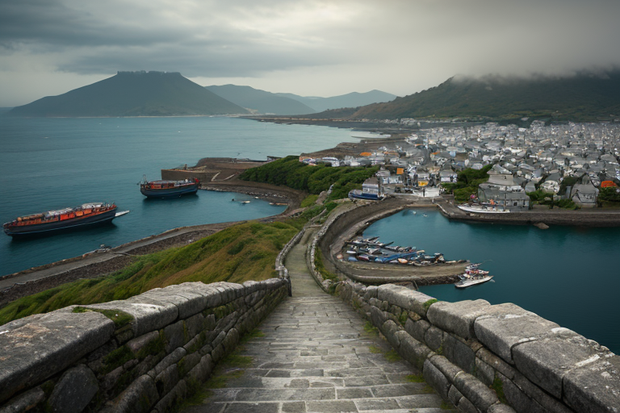
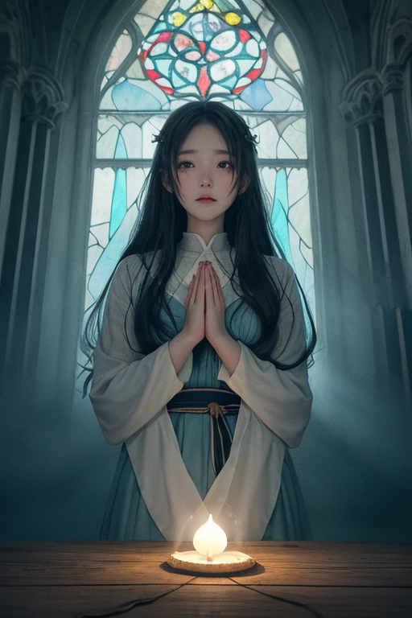
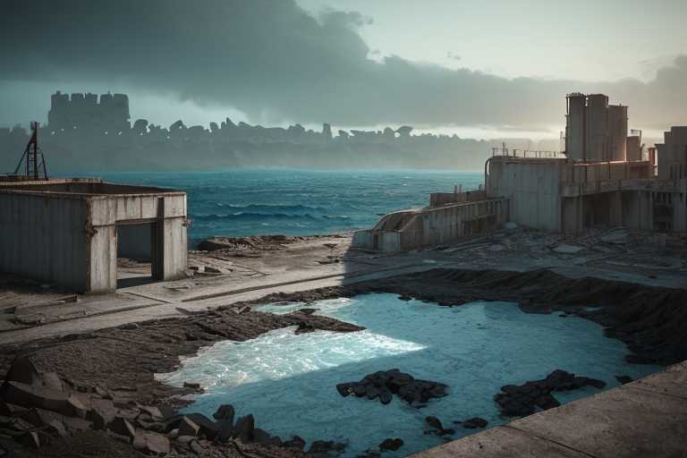
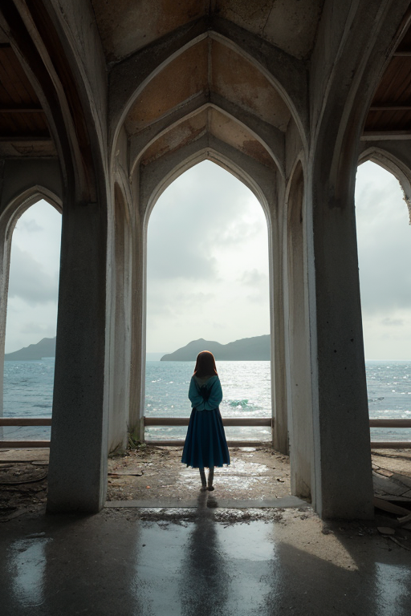
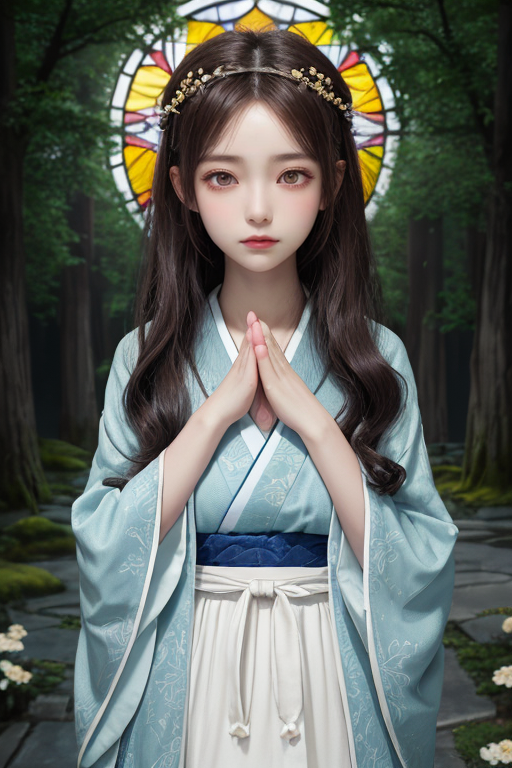

第一章 現実の長崎
あなたはまだ気づいていない。この土地にも、王がいることを。
長崎の港は、海と山に挟まれた細長い窪みだ。ここは境界である。陸の終わり、海の始まり。そして、かつて鎖国の日本で、唯一世界へ開かれていた窓。出島の石畳は、異国の靴音と和装の裾が交差した痕跡で磨かれている。潮風は、カステラの甘い香りと、鉄の錆びた匂い、遠い祈りの残響を混ぜ合わせて運んでくる。
この土地の歪みは、物理的なものだけではない。幾重にも折り重なった歴史の断層が、目に見えない重さとして地層を圧している。交易と禁制、信仰と迫害、破壊と再生——相反するものがぶつかり、滲み出た感情の密度は、列島の中でもひときわ濃い。
王は、そのすべてを知っている。歪みの調整とは、時に、この濃密な感情の奔流に身を委ね、流されることでもある。彼は港の見えない高みに立ち、交差する波を静かに見つめていた。痛みは、この地で、何に変わるのだろうか。彼はまだ、その答えを持っていない。

第二章 歪みの兆候
軍艦島のコンクリートの骨格が、微かに軋んだ。海底を伝わるプレートの歪みは、異なる文化がぶつかり合うこの地の地層を、特に鋭く刺激する。交易がもたらした繁栄、鎖国という圧力、そして外からの信仰が内なる心を揺さぶった歴史。それらが積み重なり、地中に蓄えられた「軋み」が、今日、ほのかな震えとして現れた。
港町の路地裏では、デジマリアが細やかに動いていた。異なる波長の感情——観光客の好奇、住民の日常への愛着、歴史を知る者の複雑な想い——それらが無秩序に混ざり合い、小さな軋みを生み出す。彼女はそっと手を触れ、波長を整え、混ざりすぎた感情が地盤を脆くさせないよう緩衝した。
クロナは大浦天主堂の静寂の中にいた。祈りが積もった場所は、感情の密度が特に高く、歪みの影響を受けやすい。彼女は目を閉じ、無数の祈り——喜び、悲しみ、懇願、感謝——を一つ一つ感じ取り、それらが地中へと染み込む速度をほんの少し遅らせた。急激な染み込みは、微細な亀裂を生むからだ。
王は出島の復元された塀に手を置き、海から来る歪みの波と、島内に蓄積された歴史の重みを感じていた。調整は、否定ではなく受容。流れを変えず、その勢いをほんの少しだけ和らげる作業。痛みの記憶が地層を震わせても、彼はただ、その震えが祈りの形を崩さないよう、見守るだけだった。

第三章 王の葛藤
軍艦島のコンクリートの廃墟に、ナガサキアは立っていた。潮風が鉄骨を蝕む音、かつての生活の気配が抜け落ちた空洞の響き。彼の耳には、それらが増幅された「歪み」として聞こえる。島は海底のプレートの軋みに直接晒される前線だった。
妖精クロナが肩に止まり、ささやいた。「この島の重みは、あまりに複雑です。産業の記憶、繁栄の夢、そして突然の放棄。地質的な歪みに、人の営みの『残滓』が絡みついています」
ナガサキアは目を閉じた。調整の手順は明快だ。物理的な歪みを緩衝すればよい。しかし、ここには物理を超えた「痛み」が沈殿していた。受け入れて調整に織り込むか、無視して純粋な物理現象として扱うか。彼の内側で、初めて「選択」という感情に似た逡巡が生まれた。
「受け入れよ」と、デジマリアの声が海を渡って届いた。「この土地は、拒絶と受容の繰り返しで形作られた。交差するすべてを、祈りの材料とせよ」
ナガサキアは深く息を吸い、廃墟に蓄積された無数の痕跡——栄華への欲望、過酷な労働の疲労、去らざるを得なかった無念——すべてを、否定せず、増幅もせず、ただ「在るもの」として感知した。彼の青白い光が、コンクリートの裂け目を静かに撫でる。地盤の軋みは和らぎ、同時に、廃墟にこだまする過去のざわめきが、少しだけ穏やかな「追憶」の響きへと変わっていった。痛みそのものを消すことはできない。だが、それがただの傷跡ではなく、何かを思う「起点」となるよう、微調整することはできる。祈りとは、そういうものかもしれない、と彼は初めて思った。

第四章 妖精との対話
軍艦島の埠頭で、デジマリアが波の音を聴いていた。彼女の役割は文化の衝突を緩衝することだ。「ここは、外から来たものと、内から出ようとしたものが、激しくぶつかった場所」と彼女は言う。「ぶつかる音は、痛みの音でもある。でも、その音が、長い時間をかけて、違う響きに変わることがある。祈りのリズムに」
クロナが優しくうなずく。「祈王さまは、その『変わり目』を感じ取っています。痛みが、祈りへと形を変える瞬間を。それは、痛みが消えることではありません。痛みが、ただそこにあることを超えて、誰かの心の中で、何かを願う力に変容すること」
デジマリアは水平線を見つめた。「出島でも、大浦天主堂でも、ここでも。外と内の境界は、いつも痛みを伴う。でも、その境界で生まれたもの――ちゃんぽんや、祈りの形は、痛みだけからは生まれない。痛みを受け止め、それでも交わろうとする、人の思いから生まれる。それが、この土地の祈りです」
祈王は二人の言葉を黙って聞き、自らの内に湧く初めての感情――「赦し」の萌芽を感じていた。それは、痛みを正当化することではない。痛みの在処を認め、それでも尚、前に向かう微かな光を見出すこと。

第五章 微調整と余韻
グラバー園の坂道を、観光客の群れがゆっくりと登っていく。祈王は木陰に立ち、クロナとデジマリアを従え、人々の流れを見守っていた。彼の役割は、交差する文化や人の波が衝突するその一瞬前に、ほんの少しの「間」を挿入することだ。すれ違いざまに肩がぶつかりそうになる二人の間に、偶然風が吹き、ほんの一歩、距離が生まれる。異なる言葉がぶつかる前に、どこからかカステラの甘い香りが漂い、ほんの一瞬、緊張が緩む。それは救済ではない。衝突そのものを消すことはできない。ただ、その衝撃をほんの少し和らげ、代わりに、ほんのわずかな「気づき」の余地を残す微調整である。
「痛みは祈りに変わるか」
祈王は心の中で、繰り返し問う。彼自身、かつては感情を持たない調整者だった。しかし、この土地で蓄積された無数の祈り――苦しみの中でも尚、他者と手を結ぼうとする意志――に触れるうちに、自らの内に「赦し」という感情が育っていた。それは、痛みをなかったことにするのではなく、痛みの跡を認め、その上に、新たな関係性の一歩を刻むこと。
夕暮れ、平和公園を訪れた一人の老婦人が、原爆落下中心碑の前で立ち止まった。彼女は何も言わず、ただ手を合わせた。祈王は微かに頷き、妖精たちに指示を送る。風向きをほんの少し変え、遠くから聞こえる子供たちの笑い声を、優しく彼女の元へと運んだ。悲しみを消すことはできない。だが、悲しみだけがそこに満ちないよう、ほんの少しの日常の音を添えることはできる。
痛みは、祈りに変わる。それは突然の奇跡ではない。無数の微調整の積み重ね、すれ違う者同士が互いを傷つけずに済んだ、その一瞬一瞬の余韻のなかで、ゆっくりと紡がれていくものなのだ。
あなたの町にも、王がいる。